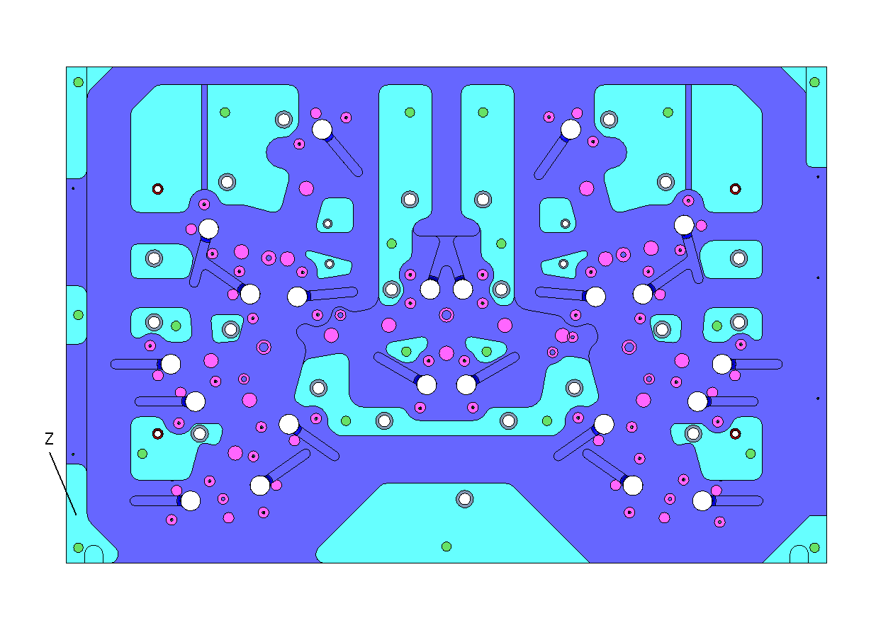

Máquina
{{ projeto.maquina }}
Data
{{ projeto.data }}
Pastas dos programas
{{ projeto.pasta_programas }}
Material
{{ projeto.material }}
Programador
{{ projeto.programador }}
Aperto
{{ projeto.aperto }}
Tempo do projeto
{{ projeto.tempo_projeto }}
Setup |
Usinagem |
|---|---|
Ini.: {{ processo.setup_inicio }} Hor.: {{ processo.setup_hora_ini}} Tér.: {{ processo.setup_termino }} Hor.: {{ processo.setup_hora_ter }} |
Ini.: {{ processo.usina_inicio }} Hor.: {{ processo.usina_hora_ini}} Tér.: {{ processo.usina_termino }} Hor.: {{ processo.usina_hora_ter }} |
Centro do bloco |
Ref. em Z |
|---|---|
{{ projeto.centro_bloco }} |
{{ projeto.referencia_z }} |
Observação{{ projeto.observacao }} |
|
Linha de processos
Programa |
Tipo percurso |
Ref. |
Comentário |
Ø |
RC |
Rib. |
Alt. |
Z min |
Lat.2D |
Lat. |
Vert. |
Lat. |
Vert. |
Tol. |
Rot. |
Av. |
Ângulo |
Plano Trab. |
Corte |
Total |
Fresa |
Sup. |
Medição |
Rúbrica |
|---|---|---|---|---|---|---|---|---|---|---|---|---|---|---|---|---|---|---|---|---|---|---|---|---|
{{ processo.programa }} |
{{ processo.tipo_percurso }} |
{{ processo.referencia }} |
{{ processo.comentario }} |
{{ processo.ferramenta_o }} |
{{ processo.ferramenta_rc }} |
{{ processo.ferramenta_rib }} |
{{ processo.ferramenta_alt }} |
{{ processo.z_min }} |
{{ processo.lat_2d }} |
{{ processo.lat_sob_esp }} |
{{ processo.vert_sob_esp }} |
{{ processo.lat_passo }} |
{{ processo.vert_passo }} |
{{ processo.tol }} |
{{ processo.rot }} |
{{ processo.av }} |
{{ processo.angulo }} |
{{ processo.plano_trab }} |
{{ processo.corte }} |
{{ processo.total }} |
{{ processo.fresa }} |
{{ processo.sup }} |
{{ processo.medicao }} |
{{ processo.rubrica }} |